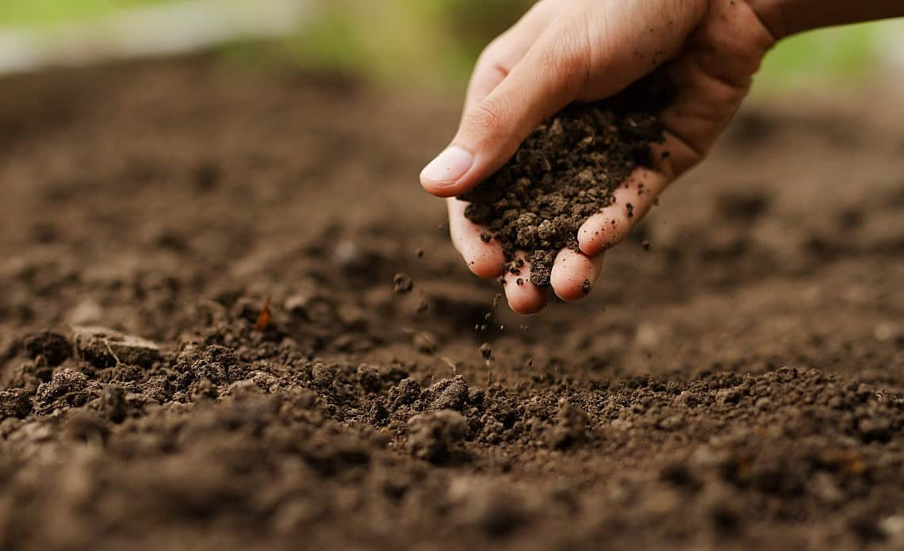
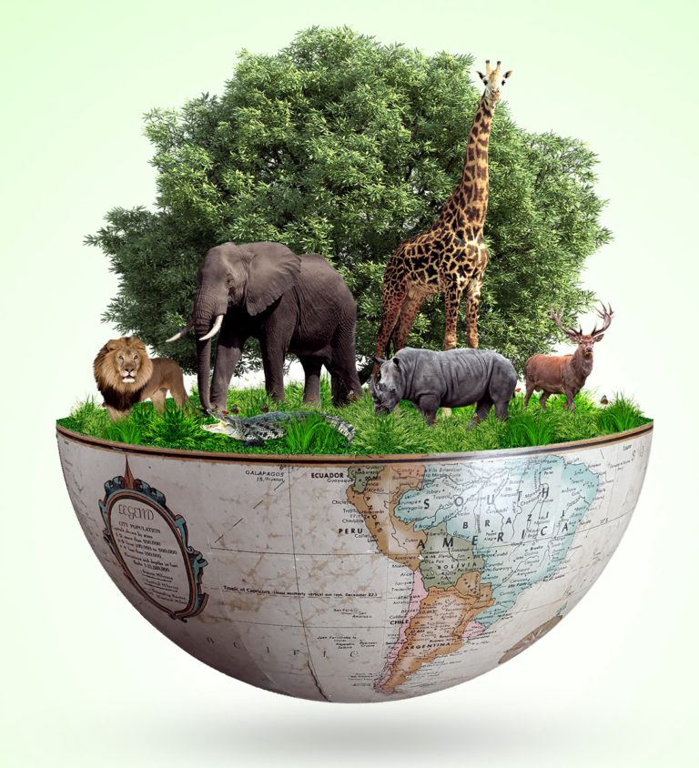

|
Água |
Bens naturais comuns são recursos oferecidos pela natureza, essenciais para a sobrevivência e bem-estar das sociedades humanas e dos ecossistemas. Eles são caracterizados por serem de uso coletivo, acessíveis a todos.
Os municípios brasileiros têm a responsabilidade de proteger e garantir o acesso equilibrado aos bens naturais comuns, já que controlam extensas áreas com riquezas naturais significativas. Com a crescente urbanização e a concentração populacional, é crucial que as gestões municipais considerem o território como um todo e controlem a pressão sobre os recursos naturais. Como esses bens são finitos, é fundamental promover seu uso racional para garantir sua preservação ao longo do tempo.
Cidades mais compactas, que ocupem porções modestas do território municipal e que busquem uma relação cada vez mais harmônica com todo o entorno natural (assim como incentivem a adoção de práticas agrícolas e agropecuárias sustentáveis e a recuperação e proteção de seus bens naturais) serão as cidades do futuro. E somente estas poderão oferecer melhor qualidade de vida e seguranças hídrica e alimentar, além de evitar mudanças climáticas intensas e eventos extremos.
Em um sentido mais amplo, os bens comuns são diferentes tipos de riquezas, recursos, espaços, valores, sistemas, processos e atividades que “pertencem” a grupos ou coletividades e que são ativamente reivindicados, criados, recriados, protegidos e restaurados para o bem e os propósitos coletivos, para gerações presentes e futuras.
Os bens comuns são governados por grupos de pessoas, que compartilham e protegem recursos coletivos, como áreas florestais e costeiras, por meio de sistemas de governança com regras e responsabilidades. Esses bens desafiam as noções tradicionais de propriedade, pois não pertencem totalmente a indivíduos, mas sim a coletividades que exercem direitos sobre o uso e a gestão dos recursos. A governança desses bens considera as assimetrias de poder e exige negociação entre os grupos e as autoridades externas.
Embora o foco seja na coletividade, a ação individual é fundamental para a proteção e gestão dos bens comuns. Exemplos incluem comunidades que protegem florestas ou recursos pesqueiros, onde práticas e regras são definidas coletivamente. O conceito de bens comuns implica uma posse compartilhada, envolvendo direitos e deveres. A governança eficaz é essencial para promover responsabilidade, coesão social e uso sustentável dos recursos, além de revitalizar práticas tradicionais.
As ameaças aos bens comuns surgem principalmente da transformação de recursos compartilhados em propriedade privada, impulsionada por políticas neoliberais que priorizam os interesses de grandes empresas em detrimento das comunidades e do meio ambiente. A exploração de terras, florestas e fontes de água para fins industriais e imobiliários concentra recursos nas mãos de elites, enquanto práticas de biopirataria e expropriação de saberes tradicionais prejudicam povos indígenas e comunidades rurais, especialmente mulheres.
Instituições financeiras internacionais promovem abordagens que favorecem a privatização e a mercantilização, resultando em degradação ambiental e exclusão das comunidades locais dos recursos naturais. Essa dinâmica desmantela práticas tradicionais de gestão compartilhada, aumentando conflitos e comprometendo a coesão social.
Nas áreas rurais, a degradação ambiental afeta a disponibilidade de alimentos e recursos. O controle dos recursos naturais se transfere de pequenos produtores para grandes empresas, limitando a capacidade das comunidades de tomar decisões sobre suas vidas. Apesar da eficácia dos sistemas tradicionais de manejo, as ações dessas comunidades para proteger seus bens comuns frequentemente enfrentam repressão e criminalização.
Alguns exemplos de bens naturais comuns:
|
|
Água |
Ar |

|
Florestas |
|  |
Solo |
|  |
Biodiversidade |

|
Recursos Minerais |